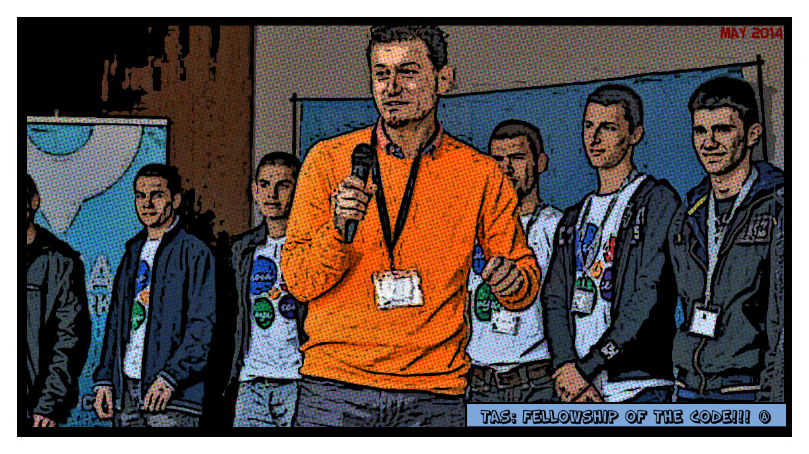
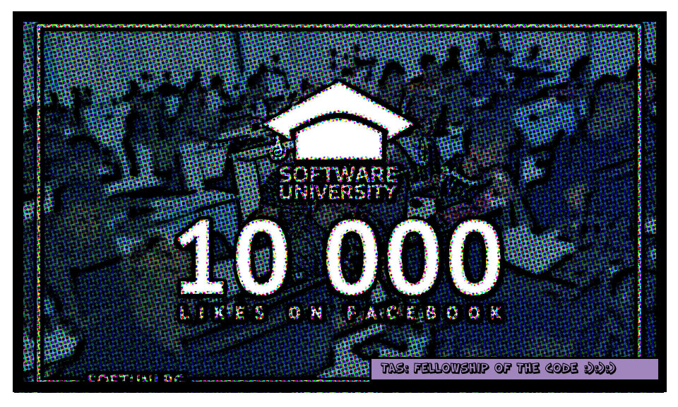
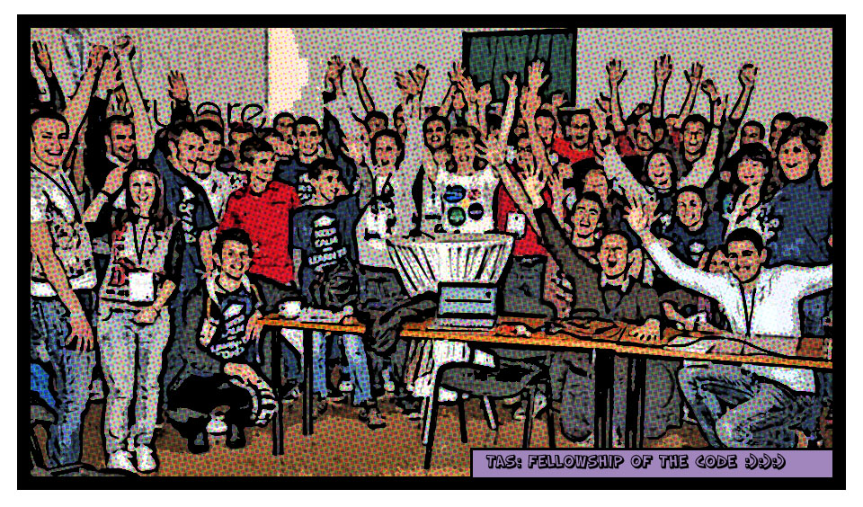
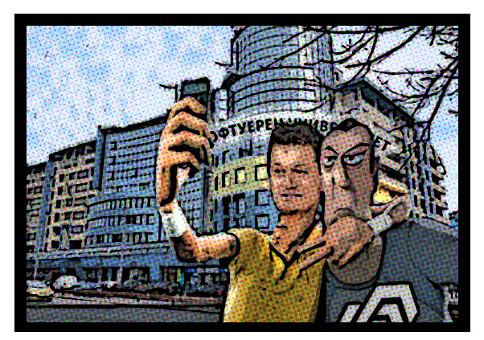

Най-накрая истинската подготовка започнала. Двмата велики лидери Светлин и Наков се събрали заедно с техния таен робот за обучение, кръстен Влади.
След три дни прекарни в тежки подготовки, отличени били най-добрите сред младите войни-програмисти-студенти и им били раздадени индивидуални задачи.
В същото време хиляди се включвали като доброволци и в интернет кампанията, заставащи твърдо зад своите ОТМЪСТИТЕЛИ!

Малко преди войната да започне и жервите да бъдат на лице, злите ректори свикали съвещание в тъмния замък на Филиповци, и решили, че няма как да се преборят с мнозинството, останали сами без никакви последователи, без никаква подкрепа, те нямали друг избор освен да апдикират от сцената на обучението.
Небивала радост избухнала в душите на Отмъстителите и техните последователи. Те най-накрая били свободни да учат и да се учат, така, както трябва да се случва. Най-накрая техния глас ще се чува и тяхното бъдеще няма да е тъмно, като стените на замъка в Филиповци.Три дни те яли, пили и кодИлИ.
Все пак като един изявен лидер и вярващ в бъдещето на младото поколение герой, Светлин Наков решил да посвети немъдрите ректори в мъдростта на истинското образование. От този ден нататък се носят слухове, че неговият светъл пример ще бъде последван от всички, но за сега са само слухове.
THE END
Приликата с дейсвителни ситуации и лица е напълно случайна ! Честно бе !